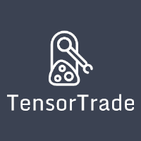

0.0.1
Home
Overview
Getting Started
Installation
Examples
Train and Evaluate
API reference
API reference
tensortrade package
Subpackages
tensortrade.agents package
tensortrade.environments package
tensortrade.exchanges package
tensortrade.features package
Submodules
tensortrade.version module
TensorTrade
Docs
»
tensortrade
»
tensortrade package
View page source
tensortrade package
¶
Subpackages
¶
tensortrade.agents package
Subpackages
tensortrade.agents.rl package
Submodules
tensortrade.agents.rl.tensorflow_agent module
Submodules
tensortrade.agents.trading_agent module
tensortrade.environments package
Subpackages
tensortrade.environments.actions package
Subpackages
tensortrade.environments.actions.continuous package
Submodules
tensortrade.environments.actions.continuous.simple_continuous_strategy module
tensortrade.environments.actions.discrete package
Submodules
tensortrade.environments.actions.discrete.simple_discrete_strategy module
Submodules
tensortrade.environments.actions.action_strategy module
tensortrade.environments.actions.trade_type module
tensortrade.environments.rewards package
Subpackages
tensortrade.environments.rewards.simple package
Submodules
tensortrade.environments.rewards.simple.incremental_profit_strategy module
Submodules
tensortrade.environments.rewards.reward_strategy module
Submodules
tensortrade.environments.trading_environment module
tensortrade.exchanges package
Subpackages
tensortrade.exchanges.live package
Submodules
tensortrade.exchanges.live.ccxt_exchange module
tensortrade.exchanges.simulated package
Submodules
tensortrade.exchanges.simulated.fbm_exchange module
tensortrade.exchanges.simulated.gan_exchange module
tensortrade.exchanges.simulated.generated_exchange module
tensortrade.exchanges.simulated.static_exchange module
Submodules
tensortrade.exchanges.asset_exchange module
tensortrade.features package
Subpackages
tensortrade.features.scalers package
Submodules
tensortrade.features.scalers.min_max_normalizer module
tensortrade.features.selectors package
Submodules
tensortrade.features.selectors.column_selector module
Submodules
tensortrade.features.feature_pipeline module
tensortrade.features.transformer module
Submodules
¶
tensortrade.version module